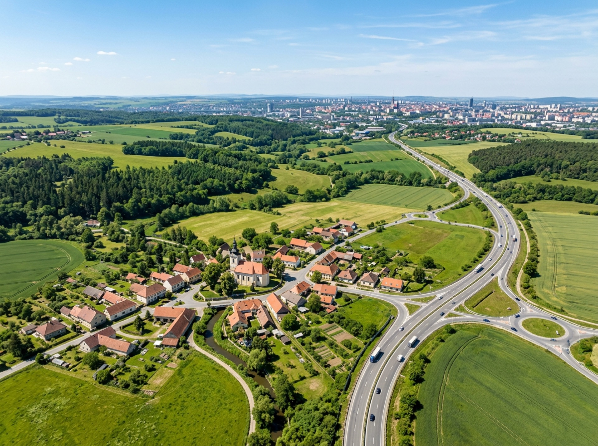
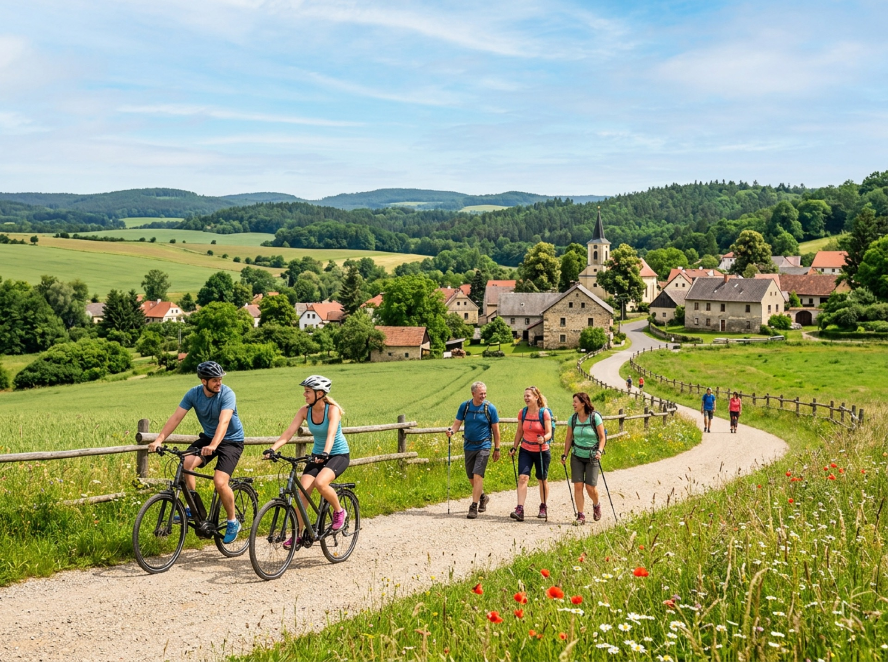
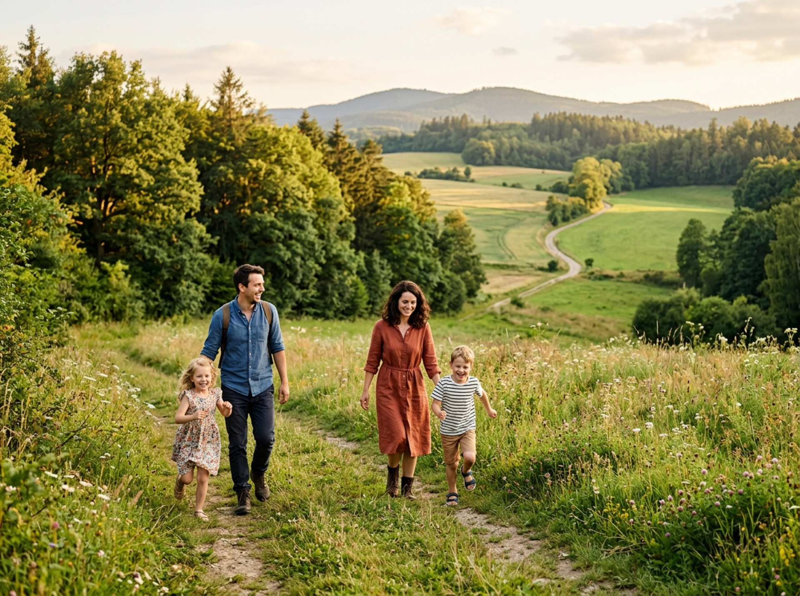
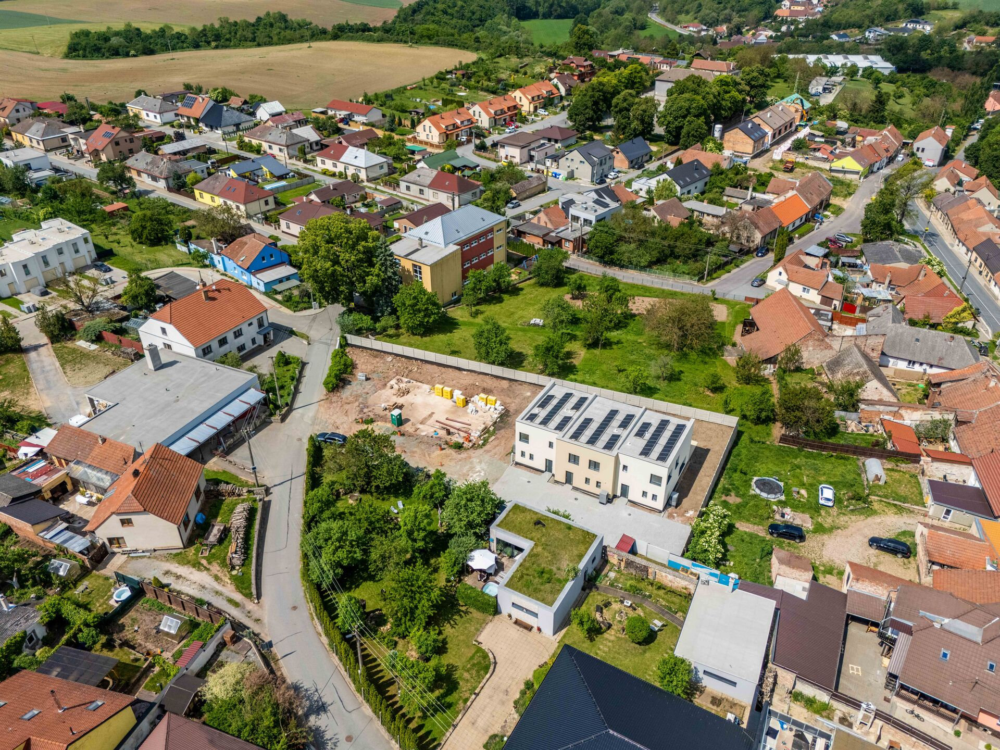
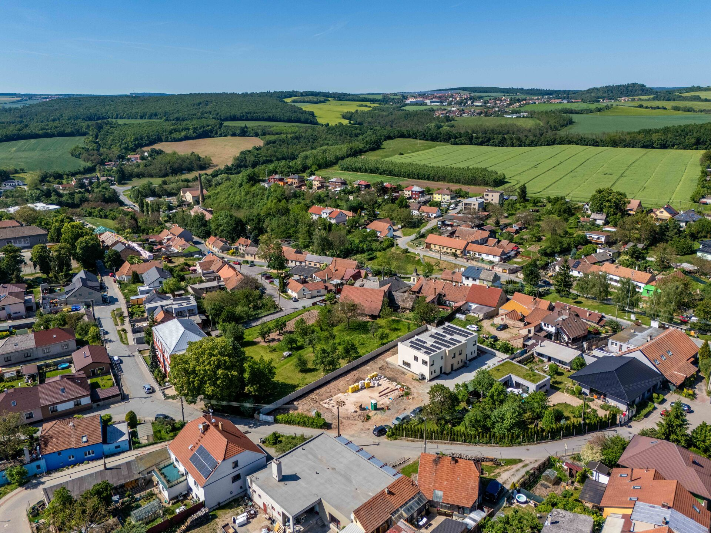

Rezidence Padochov nabízí dokonalý kompromis mezi klidem venkova a výhodami velkoměsta. Tyto moderní rodinné domy se zahradou vyrostly v srdci malebné obce, v tiché ulici s minimálním provozem. Užijte si bydlení v přírodě, odkud to máte jen 5 minut do Ivančic a necelou půlhodinu jízdy do centra Brna. Vše potřebné tak máte na dosah ruky, aniž byste slevili z nároků na soukromí.
Strategická poloha Padochova zajišťuje hladké spojení do metropole i okolních měst, ať už cestujete autem nebo hromadnou dopravou.


V Padochově nebudete jen bydlet, budete zde skutečně žít. Pro rodiny s dětmi je obrovskou výhodou Mateřská škola Duha, kterou máte doslova za rohem – necelých 100 metrů od domu. Přímo v obci funguje obchod se smíšeným zbožím a pro pohodlné vyzvedávání balíků je k dispozici Z-Box.
Srdcem obce je TJ Sokol Padochov, kde to žije sportem i kulturou. Najdete zde vyžití pro celou rodinu – od fotbalu, florbalu a badmintonu až po cyklistický oddíl. Kulturní život zpestřuje divadelní soubor Maggi a národopisný kroužek. Po aktivitách si můžete odpočinout v místním pivovaru s restaurací, zatímco děti využijí dětské hřiště.
Za většími nákupy, lékaři a základní školou to máte kousek do sousedních Oslavan (2 km) nebo Ivančic.
Lokalita je doslova rájem pro aktivní odpočinek. Jen kousek od domu na vás čeká:
Příroda jako prodloužená zahrada vašeho domova. Bydlení v Rezidenci Padochov znamená mít přírodu doslova za domem. Obec leží na malebném rozhraní Dyjsko-svratecké nížiny a Českomoravské vysočiny, což vám otevírá dveře do pestré krajiny plné hlubokých lesů, luk a ticha.
Kam vyrazit za zážitky?
Ať už vyrazíte na ranní běh lesem, odpolední projížďku na kole nebo zimní projížďku na běžkách po zasněžených polních cestách, čistý vzduch a klid budou vašimi každodenními společníky. Rezidence Padochov je místem, kde město končí a začíná skutečná svoboda.

Letecký pohled ukazuje klidnou část obce, kde Rezidence Padochov vyrostla — uprostřed zeleně, s výhledem do okolní krajiny a s dobrou dostupností Ivančic i Brna.


100 m
Mateřská škola
2,7 km
Základní škola
240 m
Autobusová zastávka
4,8 km
Zábavní park Permonium
300 m
Pivovar
250 m
Restaurace s hospůdkou
20 km
Brno-město
2,1 km
Zámek Oslavany a biotop